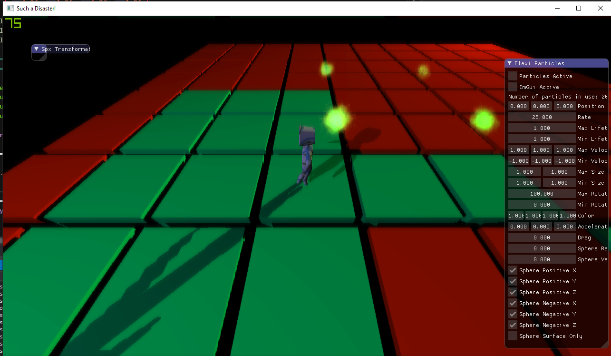

During my second year at Breda University of Applied Sciences, I was assigned to work on a custom engine with 9 other programmers. The team consisted of 4 engine, 4
gameplay and 2 graphics programmers. I was a Graphics Programmer. The custom engine, called Such a Disaster, had to be multi-platform and to be build for a specific
game(WarFair). It needed to work on Windows and on PlayStation 4. Consequently, we were provided with the tools to make an application for PS4 but the graphics programmers
needed to work with two rendering APIs - we chose GNMX and DirectX12.
Tasks
Implement an abstract renderer.
Implement a GNMX renderer.
Implement a DX12 renderer.
Implement deferred shading.
Add a particle system.
Add shadows.
Add volumetric lights.
Abstract Renderer
Me and the other graphics programmer in the team designed an abstract renderer which should've run on both Windows and PS4. We didn't know how PS4 GNMX worked but
we decided to make our abstract renderer very low-level so we can have control of all features supplied by both APIs. Unfortunately, due to Covid-19, our lecturers
told us to not build the project for PS4 because we didn't have access to the PS4 toolkits. We still had an abstract renderer but it used only DirectX12 and half
implemented GNMX, so it didn't have any purpose and we didn't know if it works. It was meaningless but we didn't want to start from the beginning so we continued.
Particle System
Since our engine was being built for a certain game, we could ask the artists about what they want the engine to include. They mentioned animations and particles as
the most important ones. Consequently, the other graphics programmer started working on animations and I started work on particles. I single particle is just a sprite,
so I immediately began implementing a sprite in DX12. I made it using a single vector point and bitwise operations in the vertex shader. Then I analyzed how UE4's
particle systems worked and implemented a system based on their design. I was able to spawn hunderds of sprites which meant I had particles implemented. I needed to
learn how to work with transparent particles and that included blending and depth testing. The particles had to be sorted by the distance to the camera and sent to the
shaders in that specific order. After that final step, I had to make a sprite use a sprite sheet instead of an image. It worked just by offsetting UV coordinates so that
was the easier part. All that was left was to add effects to the particles and the results were awesome!
Bloom
The project had very flat colors so I decided to implement a post-processing effect called Bloom. It uses Gaussian Blur and blurs the brighter pixels making a glowing
effect.
Shadows

Our project required shadow mapping. To be honest, shadow mapping seemed very complex and that is why I decided to work on particles instead, but then I had more time
and I implemented shadow mapping. Specifically, I implemented shadow mapping for point lights since they were the most complex. In order to implement shadow mapping, you
need to render all the objects with a different view and projection matrix. For point lights, the projection frustum needs to be with a 90 degrees angle so that when you
make 6 frustums around a point, you'll cover all the areas the light can reach. Then a cube map needs to be created and stored but for that I needed to find how to implement
a cube map for depth using DX12 which was difficult considering that one small wrong input could make me wonder around for days. That is exactly what happend as I used LOD
of 1 instead of 0 and the cube map depth data wasn't stored correctly. I also had to use different way of depth testing in the shader which was projection based testing,
instead of distance from camera to point and from point to light. After a week of struggles, I finally figured it out and implemented shadow mapping.
Volumetric Lights
I have had a decent experience with ray-marching using ShaderToy. I thought that making volumetric lights will be something similar. I couldn't achieve satisfying results
by just experimenting with different kind of ray-marching so I decided to do research instead. I found about Mie Scattering and used the algorithm to solve the light scattering
when marching through a ray. The results were very nice!